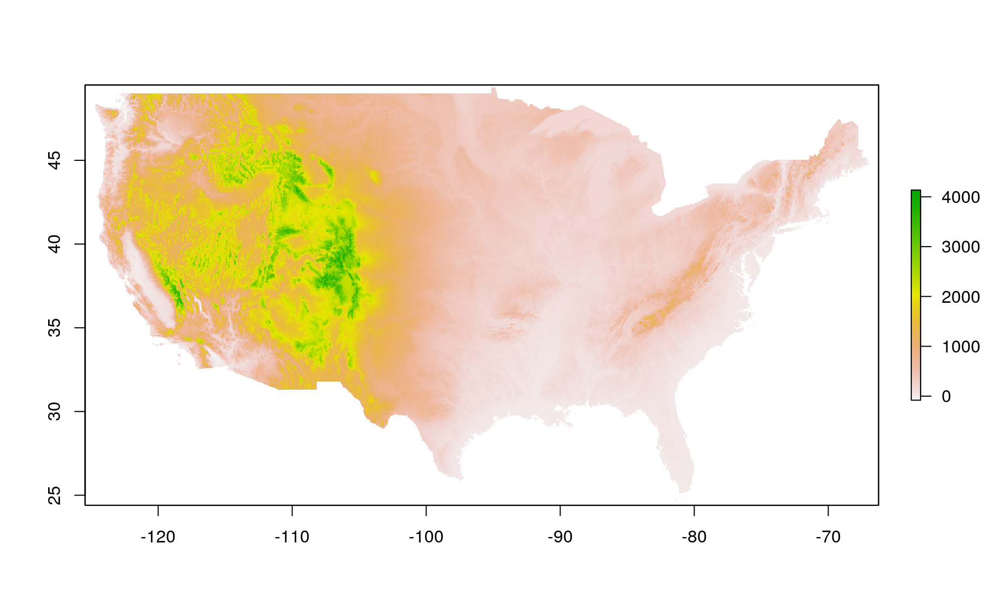
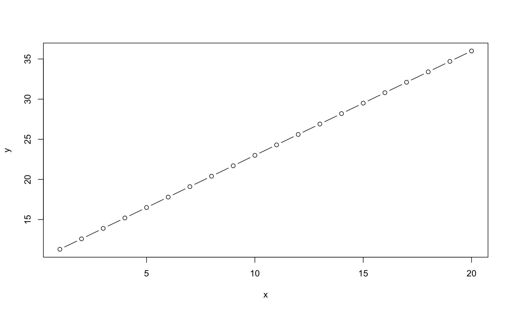
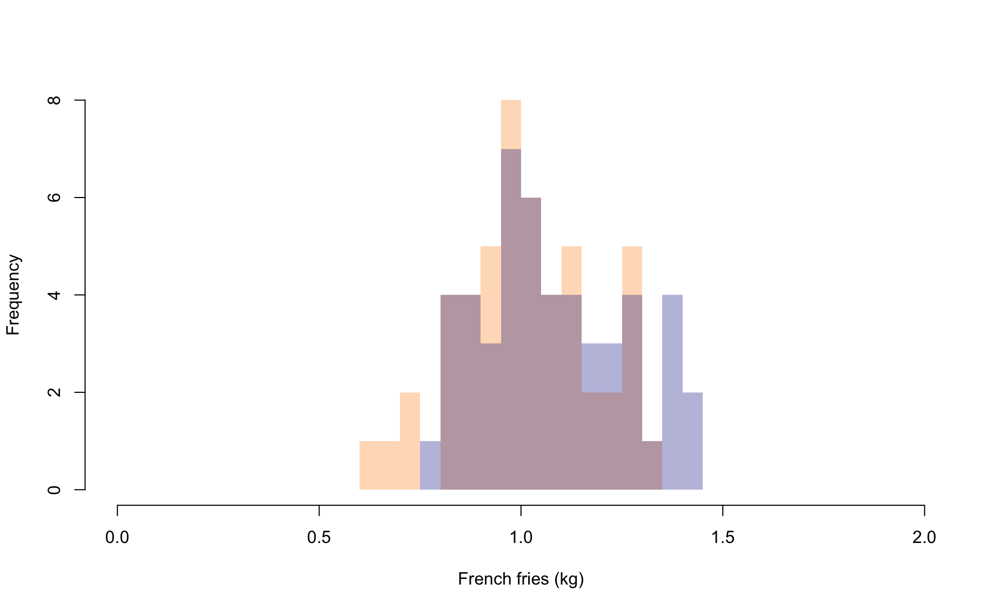
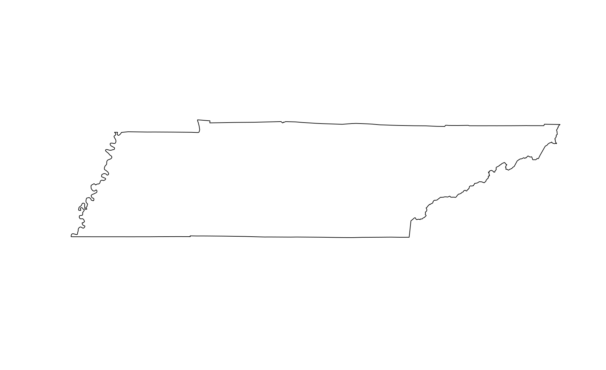
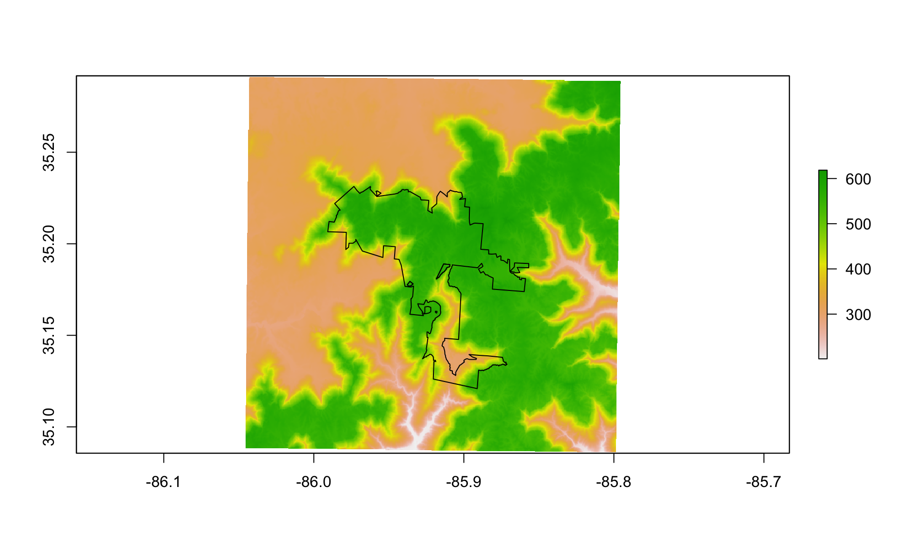
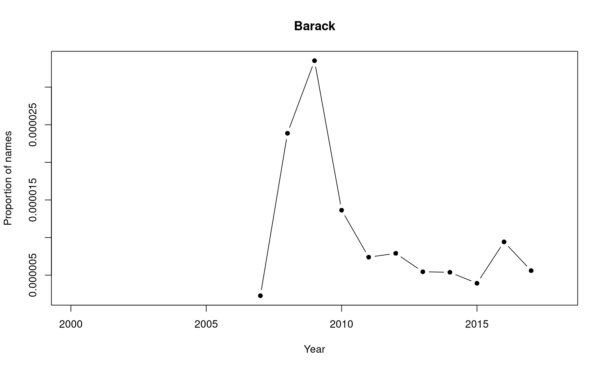

Module 47 Geographic computing & GIS
Let’s start by getting some data. Run the below code:
file_source <- 'https://raw.githubusercontent.com/databrew/intro-to-data-science/main/data/sewaneegis.RData'
library(dplyr)
library(rgdal)
library(raster)
library(sp)
destination_directory <- '/tmp'
destination_file <- file.path(destination_directory, 'sewaneegis.RData')
if(!'sewaneegis.RData' %in% destination_directory){
download.file(file_source,
destfile = destination_file)
}
load(destination_file)In-class exercises
Raster
What is the difference between raster data and vector data?
What kinds of vector data are there?
Let’s talk about projections: https://en.wikipedia.org/wiki/List_of_map_projections
Let’s fetch some raster data.
library(raster)
library(sp)
library(rasterVis)
usa <- getData('alt', country='USA', mask=TRUE)What kind of data is this? What is the structure?
Let’s break it down into just the continental United States.
cont <- usa[[1]]
plot(cont)
- Plot it!
plot(cont)
What do the values mean (the legend)?
Make a plot of Alaska.
Let’s retrieve some data for boundaries of States.
states <- getData(name = 'GADM', level = 1, country = 'USA')- Plot the states.
plot(states)
- Take a peak at the states data.
head(states)
GID_0 NAME_0 GID_1 NAME_1 VARNAME_1 NL_NAME_1 TYPE_1 ENGTYPE_1
1 USA United States USA.1_1 Alabama AL|Ala. <NA> State State
12 USA United States USA.2_1 Alaska AK|Alaska <NA> State State
23 USA United States USA.3_1 Arizona AZ|Ariz. <NA> State State
34 USA United States USA.4_1 Arkansas AR|Ark. <NA> State State
45 USA United States USA.5_1 California CA|Calif. <NA> State State
48 USA United States USA.6_1 Colorado CO|Colo. <NA> State State
CC_1 HASC_1
1 <NA> US.AL
12 <NA> US.AK
23 <NA> US.AZ
34 <NA> US.AR
45 <NA> US.CA
48 <NA> US.CO- Make an object just for Tennessee.
tn <- states[states$NAME_1 == 'Tennessee',]- Plot Tennessee.
plot(tn)- Use the
cropandmaskfunctions to get just Tennessee elevation.
tn_elev <- crop(cont, tn)
tn_elev <- mask(tn_elev, tn)
plot(tn_elev)
Cool, yeah? Now do the same for your favorite state.
Make a plot of Tennessee. And then add
elevation(Sewanee elevation) to it.
plot(tn)
plot(elevation, add = T)
Error in .local(.Object, ...): Oh no! That didn’t work. Why not? Have a look at coordinates
coordinates(tn)
coordinates(elevation)- It seems like things are on different coordinate systems. Let’s convert elevation to the coordinate system of Tennessee.
elevation_ll <- projectRaster(elevation, crs = proj4string(tn))Error in .local(.Object, ...): - Great! Now we can try plotting Sewanee elevation on Tennessee again
plot(tn)
plot(elevation_ll, add = T)
Error in plot(elevation_ll, add = T): object 'elevation_ll' not found- Make a plot of Tennessee and add Sewanee’s domain (bounadry) to it.
plot(tn)
plot(boundary, add = T)
Uh oh. Same problem as before. We need to “reproject” boundary to latitude longitude.
- Do it. Use the
spTransformfunction (notprojectRastersinceboundaryis not a raster).
boundary_ll <- spTransform(boundary, proj4string(tn))
plot(tn)
plot(boundary_ll, add = T)
- Plot the Sewanee elevation in latitude and longitude and then add Sewanee boundary
plot(elevation_ll)
Error in plot(elevation_ll): object 'elevation_ll' not found
plot(boundary_ll, add = T)
Error in polypath(x = mcrds[, 1], y = mcrds[, 2], border = border, col = col, : plot.new has not been called yet- Use crop and mask to get just the elevation for the domain. Your plot should look like this.
Error in crop(elevation_ll, boundary_ll): object 'elevation_ll' not found
Error in mask(domain_elev, boundary_ll): object 'domain_elev' not found
Error in plot(domain_elev): object 'domain_elev' not found- Add roads to the plot
Error in plot.xy(xy.coords(x, y), type = type, ...): plot.new has not been called yetOh no! Projection problems.
- Reproject roads and add them.
Error in proj4string(domain_elev): object 'domain_elev' not found- Trim down the roads so that we only include those which are in the domain boundary area using the
overfunction.
o <- over(roads_ll, polygons(boundary_ll))
Error in over(roads_ll, polygons(boundary_ll)): object 'roads_ll' not found
roads_ll_trim <- roads_ll[!is.na(o),]
Error in eval(expr, envir, enclos): object 'roads_ll' not found- Make the below plot
plot(domain_elev)
Error in plot(domain_elev): object 'domain_elev' not found
plot(roads_ll_trim, add = TRUE)
Error in plot(roads_ll_trim, add = TRUE): object 'roads_ll_trim' not found- Let’s make a rasterVis contour raster plot
library(rasterVis)
rasterVis::contourplot(domain_elev)
Error in rasterVis::contourplot(domain_elev): object 'domain_elev' not found- Let’s make a level plot
rasterVis::levelplot(domain_elev)
Error in rasterVis::levelplot(domain_elev): object 'domain_elev' not found- Let’s make a level plot
rasterVis::levelplot(domain_elev)
Error in rasterVis::levelplot(domain_elev): object 'domain_elev' not found- How about a ggplot2-style plot
library(ggplot2)
domain_elev_df <- as.data.frame(domain_elev, xy = TRUE) %>%
filter(!is.na(DEM_USGS_10m))
Error in as.data.frame(domain_elev, xy = TRUE): object 'domain_elev' not found
ggplot(data = domain_elev_df,
aes(x = x,
y = y,
fill = DEM_USGS_10m)) +
geom_raster() +
scale_fill_gradient2(low = 'white', high = 'red')
Error in ggplot(data = domain_elev_df, aes(x = x, y = y, fill = DEM_USGS_10m)): object 'domain_elev_df' not foundMake a ggplot-style raster plot of USA elevation
Let’s “bin” values in
elevationto say “high” or “low.”
cols <- c('black', 'yellow')
# add breaks to the colormap (6 breaks = 5 segments)
brk <- c(0, 300, 1000)
plot(elevation, col=cols, breaks=brk, main="High vs low")
Error in .local(.Object, ...): Do the same as above, but make 3 colors.
Let’s make a leaflet raster!
library(leaflet)
pal <- colorNumeric(c("#0C2C84", "#41B6C4", "#FFFFCC"), values(elevation_ll),
na.color = "transparent")
Error in values(elevation_ll): object 'elevation_ll' not found
leaflet() %>%
addTiles() %>%
addRasterImage(elevation_ll, colors = pal, opacity = 0.8) %>%
addLegend(pal = pal, values = values(elevation_ll),
title = "Elevation")
Error in values(elevation_ll): object 'elevation_ll' not foundAdd
structuresto the above. Hint: you’ll need to useaddPolygonsand you’ll need to reproject structures asstructures_ll…Add popups to your structures.
Make your structures a different color and remove the border (hint, you’ll need to use the
strokeargument)Get the elevation of each structure by running:
structure_elevation <-
unlist(lapply(extract(elevation_ll, structures_ll),
function(x){
mean(x,na.rm = TRUE)
}))Use the
structure_elevationobject to add a new column to thestructures_llobject.Make a histogram of the elevation of Sewanee buildings.
How low is the lowest building on the domain? How low is it?
How high is the highest building on the domain? Which building is it?
Shapefiles / polygons
file_source <- 'https://raw.githubusercontent.com/databrew/intro-to-data-science/main/data/world_shp.RData'
library(dplyr)
library(rgdal)
library(raster)
library(sp)
library(readr)
destination_directory <- '/tmp'
destination_file <- file.path(destination_directory, 'world_shp.RData')
if(!'data/world_shp.RData' %in% destination_directory){
download.file(file_source,
destfile = destination_file)
}
load(destination_file)
# Read in indicator data
df <- read_csv('https://raw.githubusercontent.com/databrew/intro-to-data-science/main/data/hefpi.csv')
shp <- world_shpSubset data by indicator & join with shape file data
pd <- df %>% filter(indicator_name =='Inpatient care use, adults')
shp@data <- left_join(shp@data, pd)Make a basic (ugly) map
library(leaflet)
library(RColorBrewer)
# map text
map_palette <- colorNumeric(palette = brewer.pal(9, "Greens"), domain=shp@data$value, na.color="#CECECE")
leaflet(shp) %>%
addProviderTiles(provider = providers$Esri.WorldShadedRelief) %>%
addPolygons(
fillColor = ~map_palette(value),
fillOpacity = 0.9)
Clean up the borders and add label
leaflet(shp, options = leafletOptions(minZoom = 1,maxZoom = 10)) %>%
addProviderTiles(provider = providers$Esri.WorldShadedRelief) %>%
addPolygons(
fillColor = ~map_palette(value),
fillOpacity = 0.9)
leaflet(shp, options = leafletOptions(minZoom = 1,maxZoom = 10)) %>%
addProviderTiles(provider = providers$Esri.WorldShadedRelief) %>%
addPolygons(
color = 'black',
weight=1,
fillColor = ~map_palette(value),
stroke=TRUE,
fillOpacity = 0.9,
label = ~round(value, 2))
Add legend
leaflet(shp, options = leafletOptions(minZoom = 1,maxZoom = 10)) %>%
addProviderTiles(provider = providers$Esri.WorldShadedRelief) %>%
addPolygons(
color = 'black',
weight=1,
fillColor = ~map_palette(value),
stroke=TRUE,
fillOpacity = 0.9,
label = ~country
) %>%
addLegend( pal=map_palette, values=~value, opacity=0.9, position = "bottomleft", na.label = "NA" )Add fancy text to map
library(htmltools)
# Create map
map_text <- paste(
"Indicator: ", shp@data$indicator_name,"<br>",
"Economy: ", as.character(shp@data$country),"<br/>",
'Value: ', round(shp@data$value, digits = 2), "<br/>",
"Year: ", as.character(shp@data$year),"<br/>",sep="") %>%
lapply(htmltools::HTML)
leaflet(shp, options = leafletOptions(minZoom = 1,
maxZoom = 10)) %>%
addProviderTiles('Esri.WorldShadedRelief') %>%
addPolygons(
color = 'black',
fillColor = ~map_palette(value),
stroke=TRUE,
fillOpacity = 0.9,
weight=1,
label = map_text,
highlightOptions = highlightOptions(
weight = 1,
fillColor = 'white',
fillOpacity = 1,
color = "white",
opacity = 1.0,
bringToFront = TRUE,
sendToBack = TRUE
),
labelOptions = labelOptions(
noHide = FALSE,
style = list("font-weight" = "normal", padding = "3px 8px"),
textsize = "13px",
direction = "auto"
)
) %>%
addLegend( pal=map_palette, values=~value, opacity=0.9, position = "bottomleft", na.label = "NA" )Exercise
Make a choropleth map of BMI for men, where the darker the shade of red, the higher the BMI for each country.
Remove the borders from the map
Add a legend on the top right of the map
Make the NA color blue
Make the hover label a combination of the country and BMI value
Make the title of the legend “BMI”
Create a function that takes an indicator name as an input and creates a map.